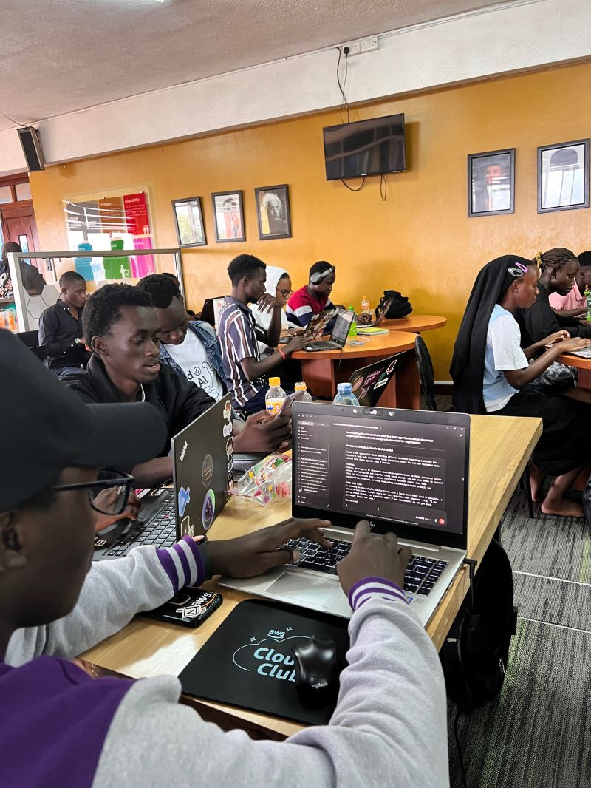
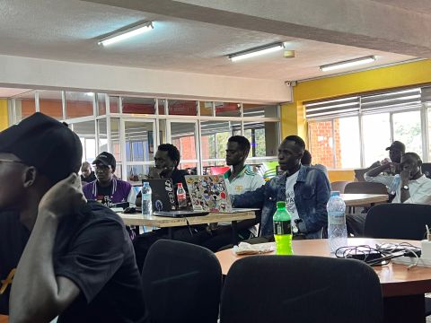
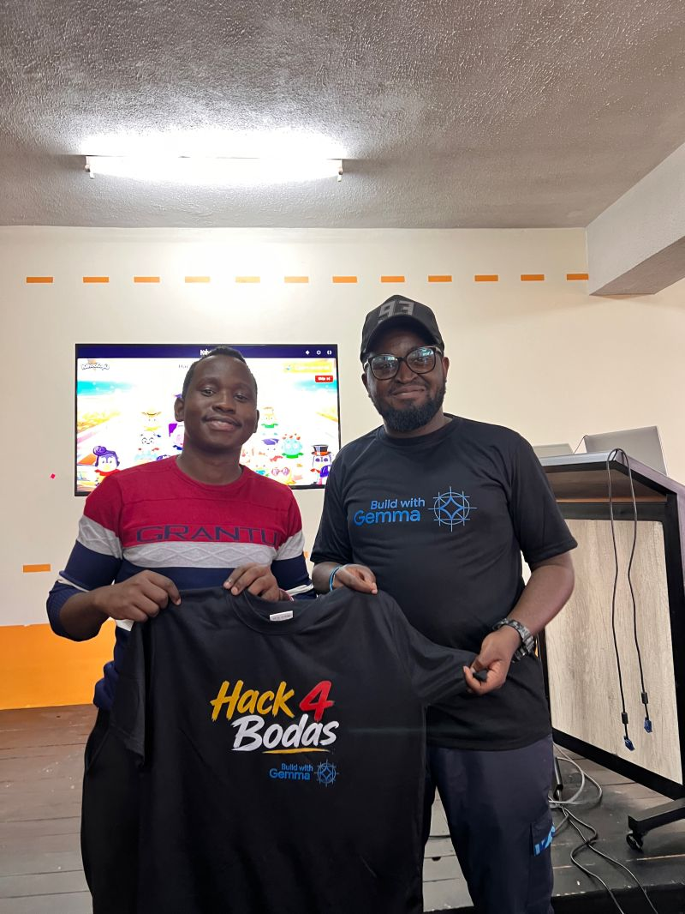
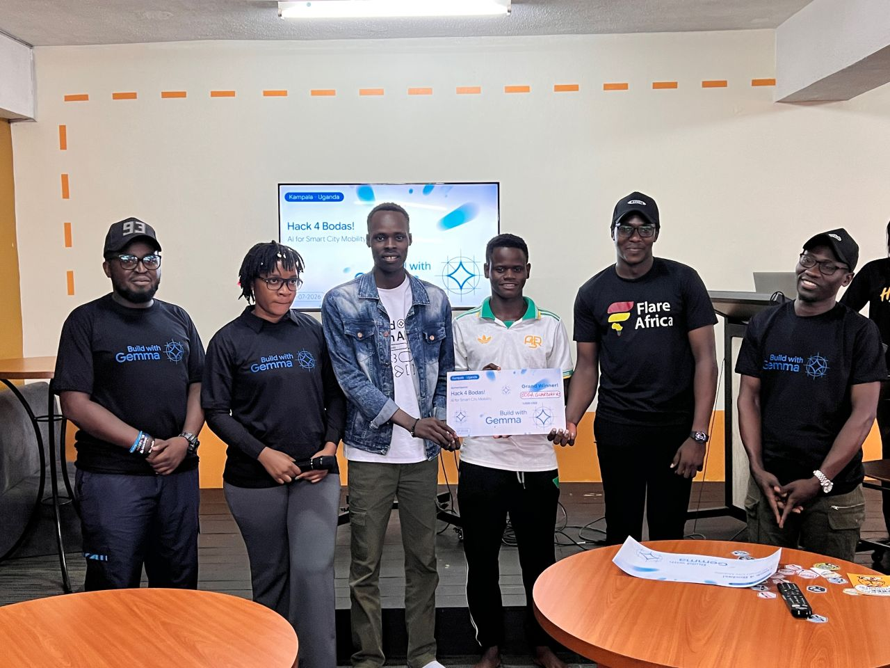
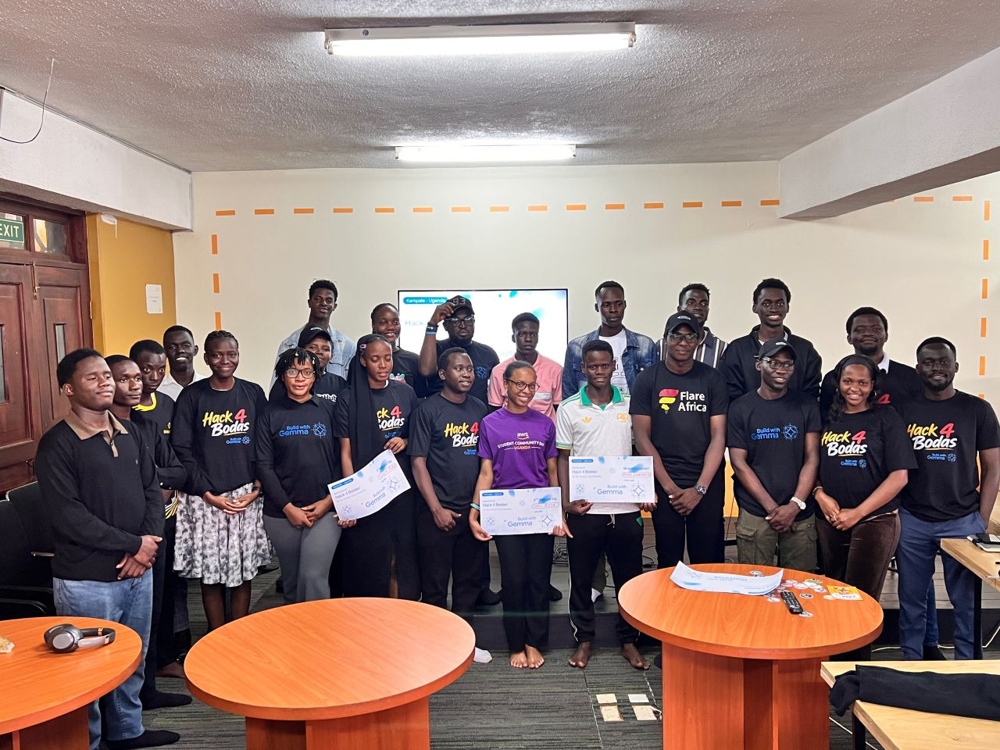
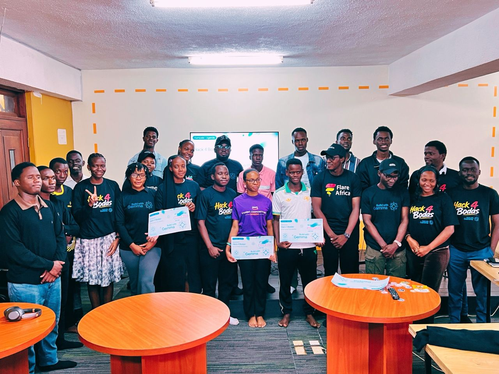

Build with Gemma Uganda: Hack 4 Bodas
I walked into the Makerere Innovation and Incubation Center not knowing what to expect. I had heard about Gemma — Google's lightweight, open-source AI model family — but I had never actually built with it. By the time I walked out, that had completely changed.
Organised by Ronnie Linslay Atuhaire and Shakiran Nannyombi, AIFest Uganda's Hack 4 Bodas brought together builders from across Kampala's tech ecosystem to tackle one of the most visceral, everyday challenges in Uganda: boda boda safety. The brief was clear — use Google Gemma to build solutions that promote safer rides, trusted trips, and smarter boda boda mobility.
To be honest, I had never built with Gemma before. But yesterday completely changed that. Through the hacking sessions, I got to explore Gemma's capabilities and learned a lot in a very practical way — the kind of learning that sticks because you earned it line by line.
The Theme: Hack 4 Bodas
Boda bodas are the backbone of urban transport in Uganda. They weave through Kampala traffic, get you where taxis won't, and they're everywhere. But they're also the centre of a safety crisis — unregulated rides, reckless speeding, accidents, and a growing trust gap between riders and passengers.
The theme hit close to home because it wasn't abstract. Every participant in that room had taken a boda before. Many of us had stories — a near miss, a friend who got into an accident, a ride where the rider had no idea where the destination was. We weren't building for a hypothetical user. We were building for ourselves and for everyone we know who flags down a boda every morning.
The Hacking Sessions
The energy in the room was electric. Teams formed organically, whiteboards filled up with sketches, and laptops hummed with the sound of people diving into Gemma's model variants for the first time. I spent the first part of the session reading through Gemma's documentation — its different model sizes (2B, 7B), its strengths in instruction following, its efficiency for on-device deployment. The more I read, the more I realised how much thought Google had put into making state-of-the-art AI accessible to developers without requiring a supercomputer.
My team and I explored building a boda trip verification system that could analyse ride data, flag anomalies, and provide both riders and passengers with a trust score before a trip began. The idea was simple: if a passenger knows the rider's safety record and the rider knows the passenger's identity, both parties are safer. Gemma's natural language capabilities let us process trip descriptions and user feedback in real time, categorising them into risk levels and actionable insights.
What struck me most was how quickly I went from "I've never used Gemma" to "what if we chain Gemma with a lightweight embedding model for semantic search?" That's the kind of acceleration that only happens when you're in a room full of builders all pushing in the same direction.
The Kahoot Challenge: A Humbling Detour
This time, the Kahoot organised by Benjamin Wakida Eldon wasn't the usual cup of tea. No podium finish this time. Not even close.
Where previous Kahoots tested general tech knowledge, this one demanded a genuine understanding of Gemma as a model — its different variants (Gemma 2B, 7B, instruction-tuned vs base), the specific strengths of each, and the tradeoffs between latency, accuracy, and deployment context. You couldn't wing it. You had to have done the reading. You had to have put Gemma into practical use during the hacking session to stand a chance.
And that was the real lesson. The Kahoot wasn't a break from the learning — it was the exam disguised as a game. Reading the documentation, experimenting with the model variants, and understanding the tradeoffs firsthand during the hack was the biggest takeaway of the entire event. It transformed "I tried this API once" into genuine understanding that I can carry forward into real projects.
Canva Charades & Community Fun
Between the hacking and the Kahoot, Awany Jey Daniel — a Canvassador in Uganda and one of the hackathon winners (back-to-back hackathon winner, by the way) — organised a round of Canva Charades. It was the perfect palette cleanser. Teams drew and guessed tech concepts using nothing but Canva shapes and good old-fashioned creativity. It reminded everyone that community events aren't just about winning. They're about the moments between the sessions: the laughter, the friendly banter, and the shared experience of being part of something bigger than any individual project.
The Winners
Congratulations to the winners who truly earned their spot — Awany Jey Daniel, Mark Kalungi, Benjamin Wakida Eldon, Shatrah Ddamulira, Dev Johnson, Mariah Miranda .L, Bahati Brenda Kizito, Okao Victor, Twikirize Achilles, and Ian Noah. Each of you built something that pushed the theme forward.
What Hack 4 Bodas Taught Me
Gemma is Accessible
You don't need a massive ML infrastructure to build with Gemma. The 2B variant runs efficiently on consumer hardware. Instruction-tuned Gemma produces remarkably coherent outputs with simple prompts. The barrier to entry is lower than I thought.
Local Problems Need Local Solutions
Boda boda safety is a Ugandan problem that needs Ugandan-built solutions. No Silicon Valley startup is going to solve this. It takes builders who have taken those rides, who know the routes, who speak the language, and who understand the trust dynamics.
Community Accelerates Learning
I went from zero Gemma experience to building with it in one afternoon. That only happens when you're surrounded by people who are equally curious, equally willing to share what they've just discovered, and equally committed to making the event meaningful.
Showing Up Matters
As I wrote in my last article — showing up is half the battle. Every event I attend teaches me something I couldn't have learned alone. Hack 4 Bodas was no exception. The connections, the conversations, the moments of shared discovery — that's what keeps me coming back.
Google Gemma Gemma 2B Gemma 7B Python Keras NLP On-Device AI Risk Analysis
Event Gallery





Gratitude
A huge thank you to Ronnie Linslay Atuhaire and Shakiran Nannyombi for putting together one of the most eye-opening hackathons I've attended. The organisation, the venue, the flow — everything was seamless.
To Benjamin Wakida Eldon for the Kahoot that humbled us all and taught us more than any tutorial could. To Awany Jey Daniel for the Canva Charades banter and for showing what back-to-back winning looks like.
To everyone who came through from various universities and tech communities — MUK, MUST, Kyambogo, the GDG chapters, the AI communities, the curious first-timers who had never used Gemma before and walked out building with it — thank you. The event was filled with learning, collaborations, fun interactions, and so many amazing people. That's what the Ugandan tech ecosystem is about.
And to Google for Developers for Gemma — for making state-of-the-art AI genuinely accessible to developers in Uganda. I am looking forward to building with Gemma even more.